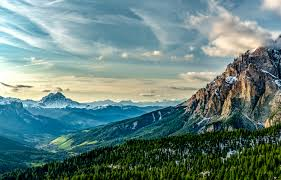
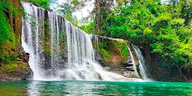

Ejercicio Práctico: Uso de Imágenes sin CSS
Objetivo
Aprender a insertar imágenes en una página web utilizando únicamente HTML.
Instrucciones
Debes crear una página web que incluya
- Un título principal.
- Una imagen local.
- Una imagen desde internet.
- Texto alternativo usando alt.
- Ancho y alto definidos.
- Una imagen que funcione como enlace.
- Uso de figure y figcaption.
- Uso de loading="lazy".
- No utilizar CSS
Ejemplo Base
- Imagen local

- Imagen desde internet

- Imagen como enlace
- Imagen con título

Salto de agua
Actividad
Completa el ejercio agregando:
- Dos imágenes adicionales


- Una imagen en formato WebP o SVG.

- Un enlace a otra página usando una imagen

Preguntas